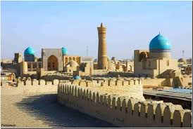
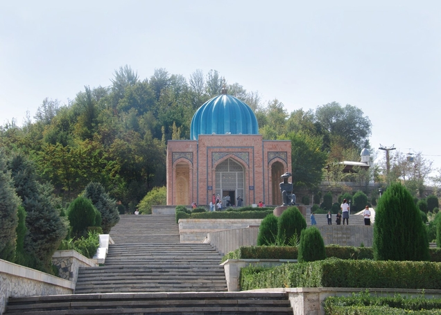
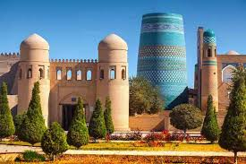
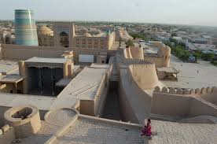

Samarkand

Samarkand (Uzbek: Samarqand), alternatively Samarqand or Samarcand, is a city in modern-day Uzbekistan and is one of the oldest inhabited cities in Central Asia. There is evidence of human activity in the area of the city from the late Paleolithic era, though there is no direct evidence of when exactly Samarkand proper was founded; some theories are that it was founded between the 8th and 7th centuries BC. Prospering from its location on the Silk Road between China and the Mediterranean, at times Samarkand was one of the greatest cities of Central Asia.
By the time of the Achaemenid Empire of Persia, it was the capital of the Sogdian satrapy. The city was taken by Alexander the Great in 329 BC, when it was known by its Greek name of Marakanda. The city was ruled by a succession of Iranian, Persian, and Turkic peoples until the Mongols under Genghis Khan conquered Samarkand in 1220. Today, Samarkand is the capital of Samarqand Region, and Uzbekistan's second largest city.
The city is noted for being an Islamic centre for scholarly study. In the 14th century it became the capital of the empire of Timur (Tamerlane) and is the site of his mausoleum (the Gur-e Amir). The Registan was the ancient center of the city. The city has carefully preserved the traditions of ancient crafts: embroidery, gold embroidery, silk weaving, engraving on copper, ceramics, carving, and painting on wood. In 2001, UNESCO added the city to its World Heritage List as Samarkand – Crossroads of Cultures.
Source: https://en.wikipedia.org/wiki/SamarkandBukhara
Bukhara (Uzbek: Buxoro), is one of the cities of Uzbekistan. Bukhara is a city-museum, with about 140 architectural monuments. The nation's fifth-largest city, it had a population as of 31 August 2016 of approximately 247,644. Humans have inhabited the region around Bukhara for at least five millennia, and the city has existed for half that time. The mother tongue of the majority of people of Bukhara is yet Persian Language. Located on the Silk Road, the city has long served as a center of trade, scholarship, culture, and religion. UNESCO has listed the historic center of Bukhara (which contains numerous mosques and madrassas) as a World Heritage Site.
The minaret is most famed part of the ensemble, and dominates over historical center of the city. The role of the minaret is largely for traditional and decorative purposes - its dimension exceeds the bounds of the main function of the minaret, which is to provide a vantage point from which the muezzin can call out people to prayer. For this purpose it was enough to ascend to a roof of mosque. This practice was common in initial years of Islam. The word "minaret" derives from the Arabic word "minara" ("lighthouse", or more literally "a place where something burn"). The minarets of the region were possible adaptations of "fire-towers" or lighthouses of previous Zoroastrian eras.
The architect, whose name was simply Bako, designed the minaret in the form of a circular-pillar brick tower, narrowing upwards.
Source: https://en.wikipedia.org/wiki/BukharaAndijan
Andijan is a city and administrative center in far eastern Uzbekistan in Andijan province, is situated in the Southeast of the Ferghana Valley and is surrounded by high mountains and hills. Andijan is about 475 km east of Tashkent, and about 45 km west of Osh, Kyrgyzstan. Andijan is a center of oil production and has a few oil refineries. Cotton growing and processing remain the dominant economic activities.
The history of the city goes back to the 9th century AD. In ancient times the Great Silk Road passed through this town, which was known as the eastern gate of the Ferghana Valley. In the 10th century Andijan was the part of the Samanids Empire. In 1483 Zaheruddin Babur was born here, and Andijan became the capital of the Ferghana State and its major Silk Road trading center. Later Babur had to go to Afghanistan and he ruled Kabul for two decades, then in 1526 he marched into Delhi and founded the Mughal Empire in India. The dynasty of the Babur's had ruled India for more than 300 years.
The Babur Literary Museum - is situated behind the bazaar, occupying the site of the royal apartments, where Babur lived and studied in Ark-Ichi, the town's citadel that exists no more. The museum opened in 1989 on the site of his residence, in celebration of the 460th year of publication of his autobiography entitled Baburname, published in English as the Memoirs of Babur. Andijan also has teacher-training, medical, and cotton-growing institutes.
Source: https://orexca.com/andijan_uzbekistan.shtmlKhiva
Khiva is one of old cities of ancient Khorezm, the pearl of eastern middle age architecture. Khiva lies 25 kilometers south of present-day Urgench.
According to the legends Khiva was founded by a son of Noah, Shem when he dug a well in the middle of the desert. People who drank water of that well exclaimed as “Khey-vakh” which roughly means “sweet water.” And this area became a caravan destination because of merchants’ frequent visit. For the next thousand years the area was inhabited by several tribes that used the Amudarya river for irrigated agriculture. According to the archeologists Khiva was founded in the 5th or 4th centuries B.C. As the first major structures were built, the city became known as trading post on the Silk Road.
First written sources date from the 10th century. The Arab traveler Al-Istarkhiy mentioned Khiva among the 30 important cities in Khorezm. The Arab geographer Ibn Batuta visited Khiva in the 14th century. He praised the ruler’s untiring care of law, order, and reported that the city was so full of people that it was almost impossible to find one’s way in a crowd.
Source: http://dsr.nii.ac.jp/khiva/en/01info.html
Qoqon
Qoqon - is one of the cultural centers of Ancient East. It is located in the western part of Ferghana valley in the lower stream of Sokh. Historical Center of Qoqon consisting of following cultural objects: Komol-Kozi Madrasah, Dahman Shahon, Madarihon Madrasah, Norbutabiy Madrasah, Gishtlik Mosque, apartment houses. The most ancient data about Qoqon date back to the II century B.C. and belong to the Chinese traveller Chzhan Tszjan, who has characterized it as a large and developed city of the valley. Data of Qoqon presented in the works of the Arabian historians and geographers in the X-XII cc., al-Istakhri, Ibn Khav Qala, Al-Makdisi and in other sources. The city that described by ancient authors is still functioning in this place now. There were 52 madrasahs, many mosques, caravanserais, bazaars, baths and other public constructions at the beginning of the last century in the city. The most worthy attention are fine and unique by their beauty and architectural shape of buildings - a residence of governors Qoqon Khanate - Urda, Norbutabiy Madrasah, Djamiy mosque, Kamol Kozi Madrasah, Dasturkhonchi, Sohibzod Kazrat, Zingbardor and many others, have been realized talent and skill of residents of Ferghana valley, which are admired all people. Qoqon has preserved its historical structure. It consists of old and new parts. One of the most remarkable constructions is Urda - palace of Qoqon Khanate governors. The palace occupies an area of 4 hectares of the extended form and represents a multi yard composition. The front entrance is designed by the portal, turned to the east, leads a wide ramp. Above the entrance in ktoba of the main portal, there is an inscription "Arki oliy - Said Mukhammad Khudoyorkhan" (High chambers of Said Mukhammad Khudoyorkhan).
Source: http://whc.unesco.org/en/tentativelists/5291/Khorazm
Khorezm is one of the most ancient historical and cultural regions of Central Asia. In written sources of the Arab conquest period, Khorezm is called a country of "tens of thousands of fortresses". In fact, today in the Khorezm region archaeologists have found dozens of ancient cities, ruins of former powerful castles and royal palaces. The most famous of them are Toprak-Kala, Janbas-Kala, Koy-Krylgan-kala, Kyzyl-Kala and Ayaz-Kala (“Kala” is translated as a fortress.) Even today, the colossal sizes of the ruins impress with its magnificence and power. Thousands of fortresses spread over vast arid steppes and as gigantic statues keep the secrets of Ancient Khorezm.
Khorezm attracts not only with numerous ruins of ancient and medieval fortresses. It can rightly be considered the homeland of one of the oldest world's religions - Zoroastrianism. The researchers of Avesta, the holy book of Zoroastrians, believe that this ancient religion appeared on the territory of the Great Khorezm (it included Khorezm, Turkmenistan, Afghanistan, until the north of Iran). There is a disagreement as to exactly where Avesta was written, but most scholars believe that it appeared on the territory of modern Khorezm.
One of the most interesting mysteries of the history of Ancient Khorezm is an issue about the identity of the concepts of "Aryan nation" and the Great Khorezm. The issue of the origin of the Aryans and their original habitat still remains one of the most mysterious in the history of mankind
Source: http://www.advantour.com/uzbekistan/karakalpakstan/ancient-khorezm.htm